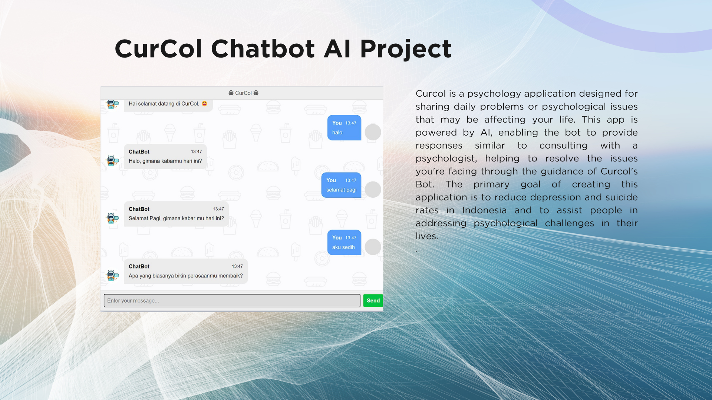
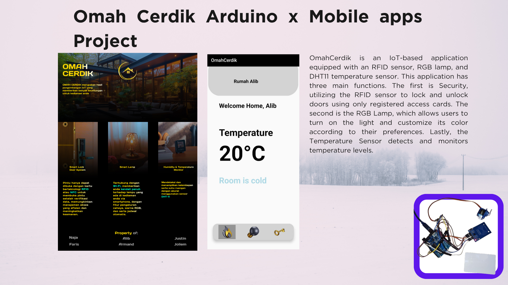
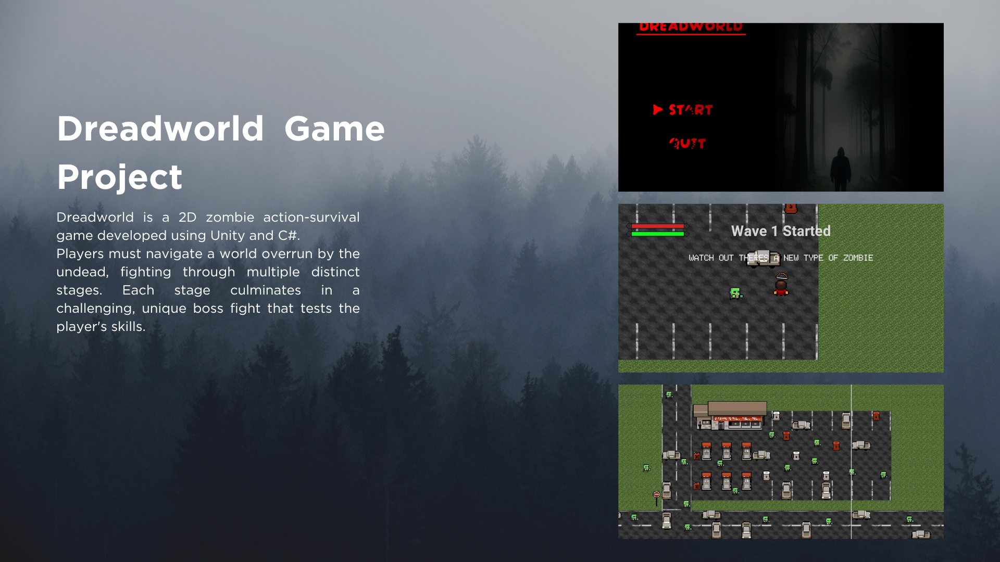
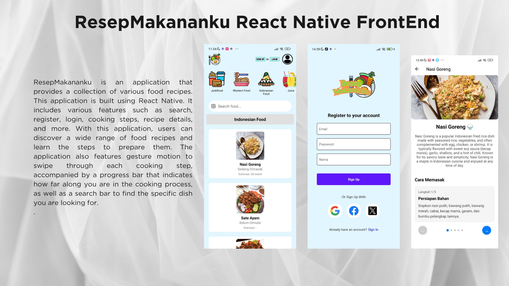
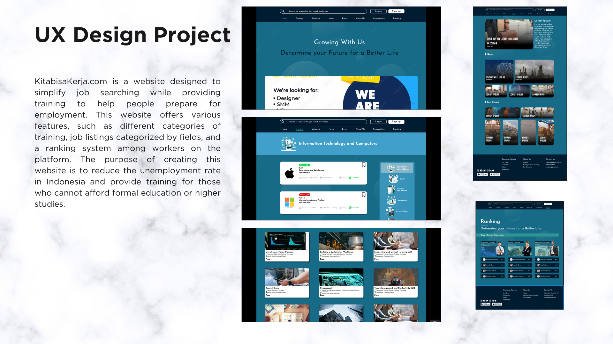
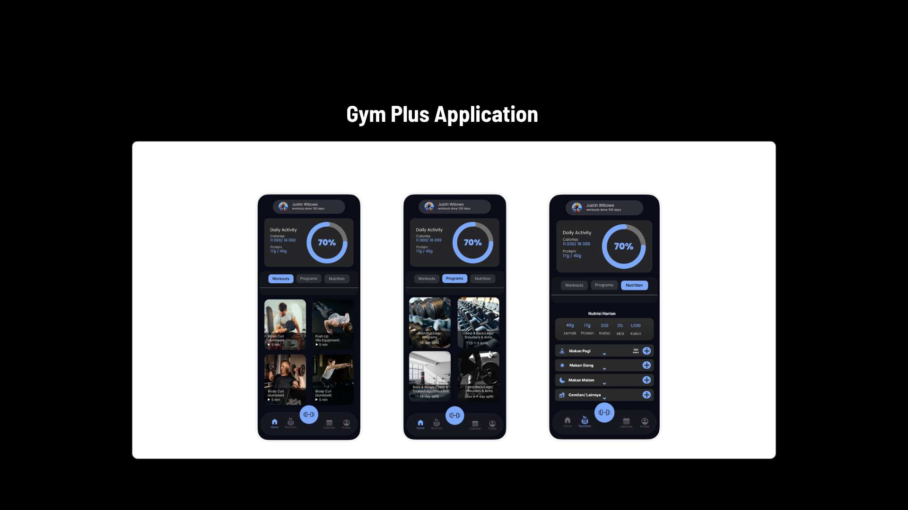
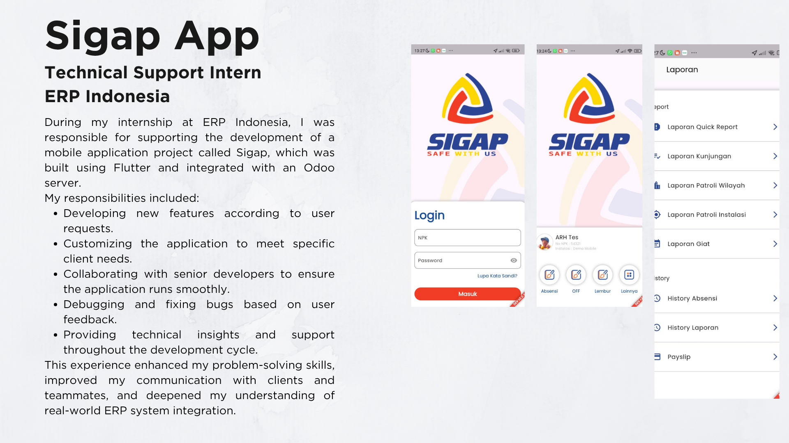
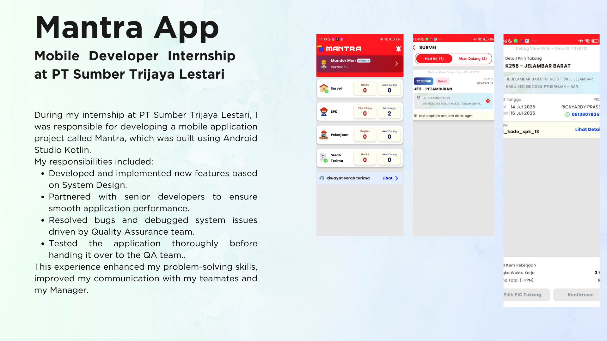
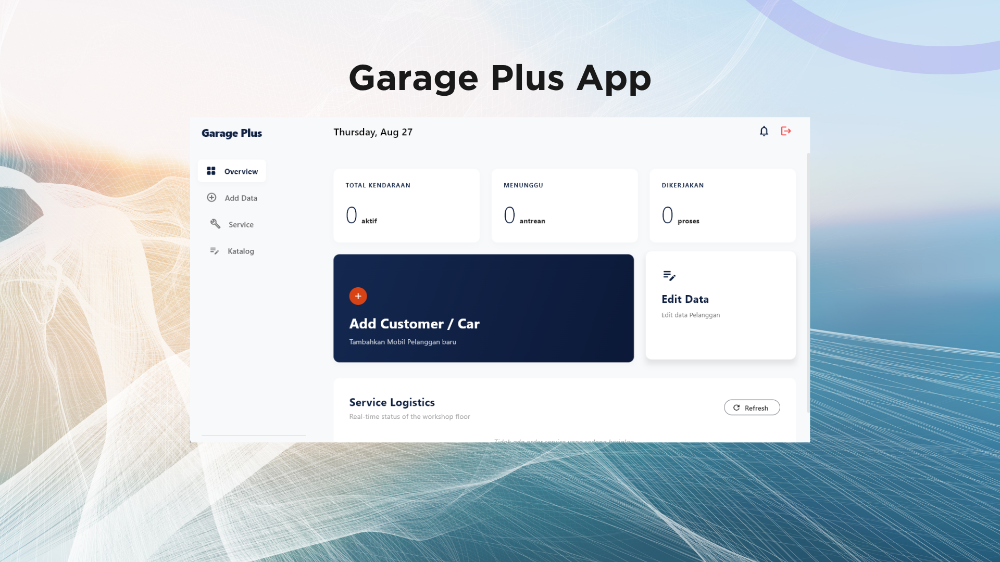

CurCol Chatbot AI Project
An AI-driven mental health application that provides virtual psychologist-like consultations to help users overcome emotional challenges and reduce depression rates in Indonesia.
View ProjectHi, I'm a Mobile Developer
Computer Science graduate who completed studies in 3.5 years with hands-on experience in technical support and mobile development. Experienced in building, maintaining, and optimizing applications while developing strong problem-solving, technical, and collaboration skills. Quick adapt, eager to learn new technologies, and committed to delivering scalable solutions while continuously growing in the technology industry.
Hello, my name is Justin. I am a Computer Science graduate who completed my studies in 3.5 years, graduating in the 7th semester. I have experience as a Technical Support and Mobile Developer, where I developed strong problem-solving skills, technical expertise, and hands-on experience in building and maintaining applications. I take pride in being a multitalented individual who is always eager to learn and take on new challenges. With a persistent and determined mindset, I continuously strive to turn obstacles into opportunities for growth and success.
Contact Me
An AI-driven mental health application that provides virtual psychologist-like consultations to help users overcome emotional challenges and reduce depression rates in Indonesia.
View Project
OmahCerdik is an IoT smart home app designed for security and comfort. It allows users to unlock doors using registered RFID cards, control and change the colors of RGB lights, and monitor the room temperature easily.

Dreadworld is a 2D zombie action-survival game developed using Unity and C#. Players must navigate a world overrun by the undead, fighting through multiple distinct stages. Each stage culminates in a challenging, unique boss fight that tests the player's skills.
View Project
ResepMakananku is a comprehensive recipe application built with React.js. It allows users to discover a wide variety of food recipes, complete with detailed cooking steps. The app features user authentication (login/register), a search bar to easily find specific dishes, and an intuitive gesture-swipe interface with a progress bar to help users track their cooking progress step-by-step.
View Project
KitabisaKerja.com is a job search and skill development platform, with its UI/UX designed using Figma. The website aims to reduce the unemployment rate in Indonesia by providing accessible training for individuals who cannot afford formal education. It features categorized job listings, various training modules, and a unique worker ranking system to help users prepare for and secure employment.
View Project
Gym Plus is an innovative fitness application developed using Flutter and Python. Designed to elevate workout routines, the app integrates a powerful Python-based computer vision model to provide real-time exercise tracking. This ensures users can accurately monitor their form, track their repetitions, and maintain consistent progress in their physical training through a seamless mobile interface.
View Project
Sigap is a security mobile app built with Flutter dart and connected to an Odoo server. I worked on this project during my internship at ERP Indonesia. The app provides custom features based on what the clients need. I also fixed bugs and improved the system to make sure the app runs smoothly for the users.

Mantra is an Android mobile app built with Android Studio to help workers and Supervisor with their daily tasks. I developed this project during my internship at PT Sumber Trijaya Lestari (Aksesmu). My tasks included improving the UI and making smooth API connections based on the system design. I also tested the app and fixed bugs to make sure it runs perfectly for the users.

Garage Plus App is an app built with Flutter (Dart) and Supabase as the database. This app helps manage customer maintenance services, sends service reminders, and follows up on the service results. My task was to build this app from start to finish and design the database to make sure it runs smoothly for the users.
View ProjectSupported senior developers in the end-to-end mobile development lifecycle (Android) for the Aksesmu application. Implemented new features by translating UI/UX designs into scalable code and integrating business logic. Improved application performance and stability through bug identification, analysis, and resolution. Ensured code quality by contributing to testing (unit & widget tests) and actively participating in code reviews and cross-functional collaboration.
Designed and implemented new features based on client requirements using Flutter and Odoo server. Identified and fixed bugs to improve application performance and reliability. Collaborated with developers and clients to deliver tailored and efficient solutions.
Leading UKM Futsal BINUS, arranging training schedules, arranging events to be held, and interacting with leaders in other regions. Official Futsal Binus University@Semarang Rector Cup 2022, 2023, 2024 Holding Community Service at Orphanages in 2023 Held Futsal competition in Binus University@Semarang in 2024
Executed regional promotional campaigns and direct marketing initiatives across Solo, Yogyakarta, and Semarang to increase university brand awareness. Managed promotional exhibition booths at major public venues, including a 3-day event at Pakuwon Mall Jogja and a 1-day event at DP Mall Semarang. Served as a field coordinator (Runner) during the iDEX campus event, facilitating campus tours and assisting visiting high school students and teachers to ensure a seamless experience. Honed strong public speaking, interpersonal communication, and persuasive skills by actively engaging with prospective students, parents, and the general public.
Computer Science graduate who completed studies in 3.5 years with hands-on experience in technical support and mobile development. Experienced in building, maintaining, and optimizing applications while developing strong problem-solving, technical, and collaboration skills. Quick adapt, eager to learn new technologies, and committed to delivering scalable solutions while continuously growing in the technology industry.